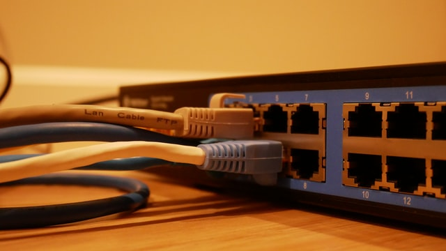

IP Addresses, Packets and Routing

Pictured Above: A router used for managing the traffic of data packets over a network
The internet is a collection of networks and in order for information to flow freely between them there needed to be a standard by which data was sent. The structure that was developed is called the Internet Protocol (or IP). The Internet protocol governs how packets of data are sent from one device to another leveraging its location on the network, known as it’s IP address. An IP Address is a series of numbers broken down by a 4-part hierarchy. The first set of numbers identifies the country, followed by the region, subnetwork and finally the device itself. The header on the packets sent through the network contains this address and the senders address so a reply can be sent.
The packets are the smaller pieces of the overall message that you are trying to send. These packets don’t travel in a direct line to the given destination, devices called routers direct the traffic of these packets to make sure they don’t run into any problems. If a particular route is congested or goes down completely the routers will know to bypass these lines, this keeps the network fault tolerant. Packets that comprise the same message may ultimately take different routes to reach their destination but once they all arrive, they can be reassembled and read by the receiving device. TCP (Transmission control protocol) will take an inventory of all the packets it receives from a message and if everything is accounted for it will “sign off” that it is complete, otherwise it will request that the missing packets be re-sent.
The first few decades of the addresses of internet relied on Internet Protocol version 4. This is a system that is built on a 32-bit address space which allows for roughly 4 billion unique combinations. At the time this was likely thought to be plenty of addresses but obviously the Internet has grown beyond anyone’s wildest dreams. There is now a multi-year effort to move to IPv6 which is a new 128-bit addressing system that can accommodate up to 340 undecillion unique addresses.